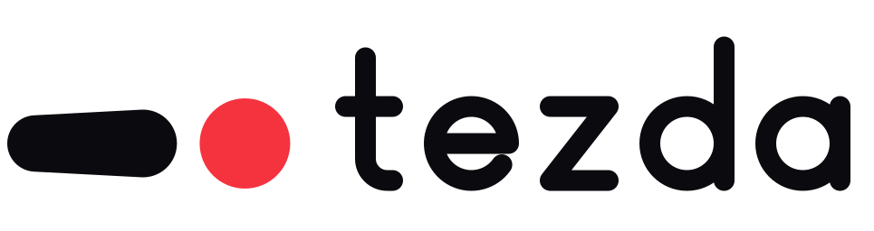
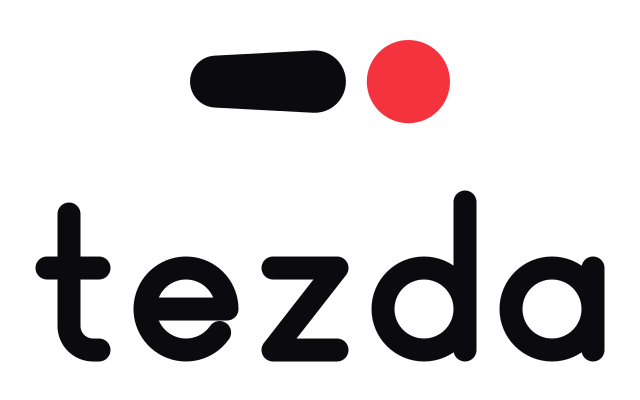
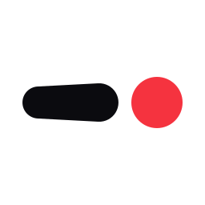

— • = Morze alifbosida "TE". Nuqta bir zumda yetib keladi, ortida iz qoladi.
Asosiy: gorizontal (tezda-lockup). Vertikal: tor joylar uchun (tezda-stacked). Belgi: avatar, ikonka (tezda-symbol). Qora fonda — tezda-lockup-reverse (oq + qizil nuqta). Bitta rang kerak bo'lsa — to'liq qora yoki to'liq oq.


Logo atrofida kamida bitta nuqta diametri qadar bo'sh joy qoldiring. Unga matn, chegara yoki boshqa logo kirmasin.
CMYK va Pantone qiymatlari taxminiy — bosmadan oldin bosmaxona namunasida tekshiring. Qizil matn uchun emas: oq fonda qizil mayda matn kontrasti yetarli emas.

aylantirmang / ko'zgu qilmangTire va nuqta orasidagi masofani, nisbatlarini o'zgartirmang; soya, kontur, effekt qo'shmang; yozuvni boshqa shrift bilan almashtirmang.